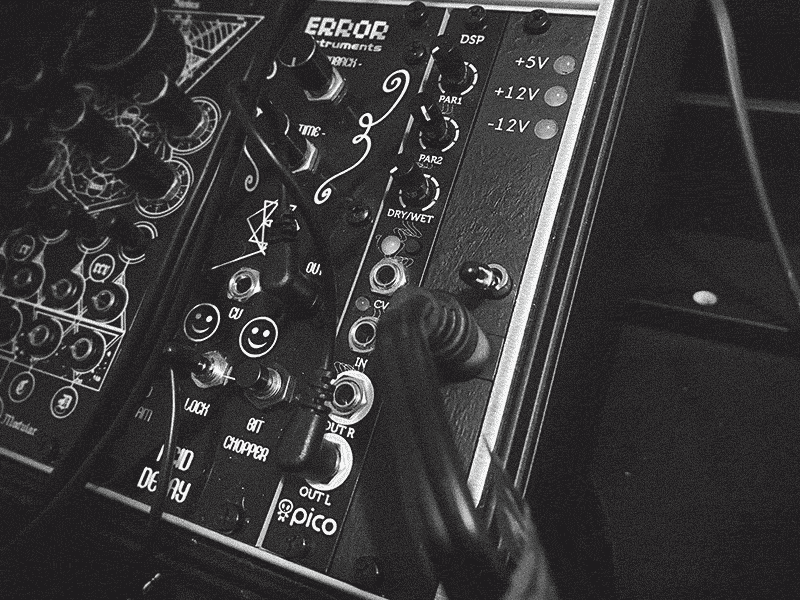
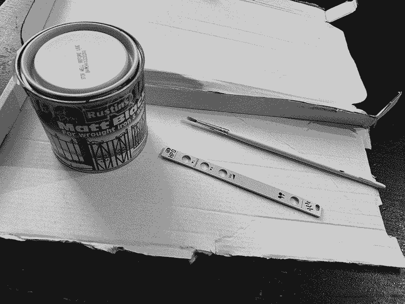
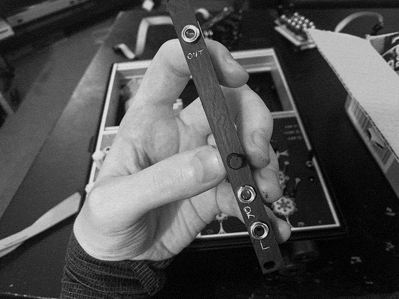
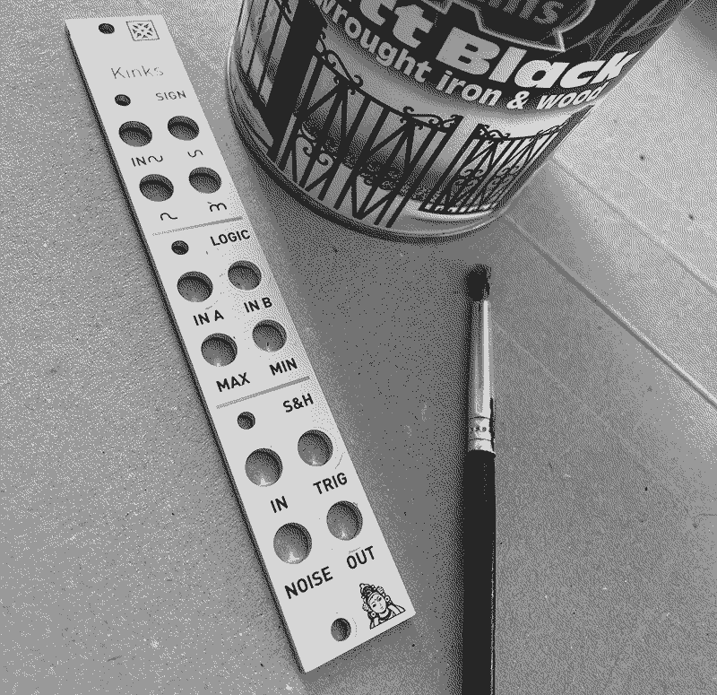
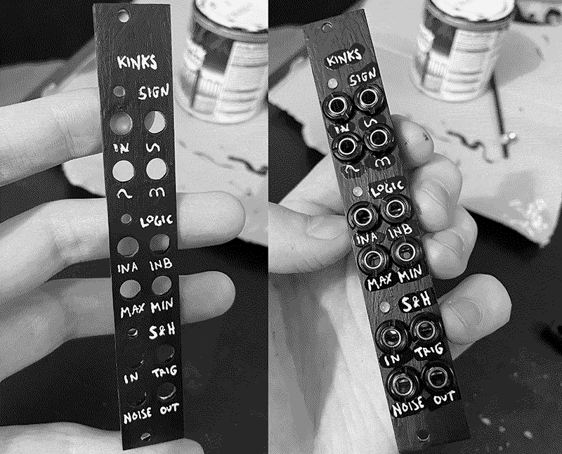

Painting Panels
24/05/2022
Note: tutorials are carried out at your own risk. Be careful with your precious self, modules & system.

I’m sure this isn’t the best way (might even be the worst way) but it works for me! I wouldn’t recommend doing it on anything expensive or anything you might regret not being able to sell on in the future. I imagine the best way probably involves removing the existing text, using some kinda primer then a spray can for a nice even finish but here’s what i’ve done to hide those pesky silver panels.
Tools/materials
- This is the exact paint I got (see picture below). I can’t remember if I bought this specially for it, I probably searched “black metal paint” on eBay
- If you don’t have a paint brush lying around, grab a kitchen sponge and cut a corner off with scissors and use this as a brush
- Rip a cardboard box open to have a flat risk-free surface so you don’t get paint anywhere

Method
- Remove panel.
- Shake paint can.
- Slap paint on.
- Wait for that coat to be semi-dry or for as long as your patience allows, 20 or 30 minutes might be alright.
- Do another coat- if it’s not looking very even, lean into the texture and make it look deliberately splotchy.
- Wait a bit and do a third coat if it looks like it needs it.
- Now try to forget about it completely and let it properly dry, overnight if possible, or whatever the can says.
- Add text labels (see below) then reassemble module.

I have two tried-and-tested methods for adding the labels back on so you can remember what everything does:
- Use a pin to scratch out the text for some nice rustic silver text (see above).
- Use a white pen to write the text labels onto the panel. Then use clear nail varnish to put a protective layer over the pen (see below).
So far i've done this on the uZeus and ALM HPO (both pictured above), a York Modular HPF, Mutable Instruments Kinks and also a non-eurorack Yamaha mixer. If you've tried this, I would love to see your results and if you've got any tips to share, I'll add them to this page.


My results are obviously pretty rough around the edges but once it's back in the rack, you'd be surprised how much they blend in and look alright. For some boring utilities I think it actually adds a bit of character.
Alternate Options to Painting Panels
- Sticker label/overlay You can buy plain black self-adhesive sticker sheets or you could get something printed. Cutting the holes out wouldn't be much fun but I imagine someone's tried this method before.
- Get a custom panel made A bit of a learning curve but there are resources out there. I think a method that some people use is scanning in the original panel then importing it into CAD software to get the measurements right, then creating a new design for it. Will definitely give this a go one day!
- Buy a pre-made replacement panel See my list of places to buy black panels. People are making more every day and some places may even do commissions.